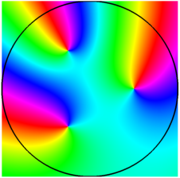

function ComplexRoots
Poles and zeros of complex functions can be located by the evaluation of contour integrals, as mentioned in Chapter 5 of the Chebfun Guide. For example, suppose we have a function like this one with a single root $s_1$ in the unit disk:
ff = @(z) (z-0.5i).*exp(z);
We can find the root as the value of a contour integral around the unit circle: $$ s = \frac{1}{2i\pi} \int z \frac{f'(z)}{f(z)} dz. $$
Since Chebfun works with real independent variables, we parametrize the unit circle by a real variable $t$ on $[-1,1]$:
z = chebfun('exp(1i*pi*t)');
which gives us $$ s_1 = \frac{1}{2i\pi} \int z \frac{(df/dt)(dt/dz)}{f} \frac{dz}{dt} dt $$ $$ \phantom{s_1} = \frac{1}{2i\pi} \int z \frac{(df/dt)}{f} dt. $$
So here is the Chebfun evaluation:
f = ff(z); s1 = sum(z.*diff(f)./f)/(2i*pi)
s1 = -0.000000000000003 + 0.500000000000002i
There is nothing in this computation that depends on the use of the unit disk. Other contours are equally tracatable in Chebfun, as illustrated in the Example complex/KeyholeContour and in Chapter 5 of the Chebfun Guide.
This method of finding a single root goes back at least to McCune in 1966 [4]. In practice we would often want to be able to find multiple roots, and a generalized algorithm for this case was published by Delves and Lyness in 1967 [2], with mathematical origins as far back as Jackson in 1917 [3]. For a discussion of all kinds of related algorithms, see [1]. The idea here is that if $f$ has more than one root in the unit disk, then the value $s$ above comes out as the sum of all these roots. Similarly
$$ s_2 = \frac{1}{2i\pi} \int z^2 \frac{f'(z)}{f(z)} dz $$
is the sum of the squares of the roots, the analogous formula for $s_3$ with a factor $z^3$ gives the sum of the cubes, and so on. And a count of the number of roots is given by
$$ s_0 = \frac{1}{2i\pi} \int \frac{f'(z)}{f(z)} dz $$
(this is basically the argument principle). So for example we can count the number of roots of $\cosh(\pi z)$ in the unit disk like this:
ff = @(z) cosh(pi*z); f = ff(z); s0 = sum(diff(f)./f)/(2i*pi)
s0 = 2.000000000000000 - 0.000000000000000i
Here are the sum of the roots and the sum of their squares:
s1 = sum(z.*diff(f)./f)/(2i*pi) s2 = sum(z.^2.*diff(f)./f)/(2i*pi)
s1 =
4.330727237839987e-20 - 1.370796878478212e-17i
s2 =
-0.499999999999999 + 0.000000000000000i
corresponding to roots at $\pm 0.5i$. We can find these numbers systematically by noting that the monic polynomial $p(z)$ with these roots has coefficients $c_0 = (s_1^2-s_2)/2$, $c_1=-s_1$, $c_2=1$. So here is a calculation of the two roots in the unit disk of $\cosh(\pi z)$:
p = [1 -s1 (s1^2-s2)/2]; roots(p)
ans = -0.000000000000000 - 0.499999999999999i 0.000000000000000 + 0.499999999999999i
Generalization to higher numbers of roots can be done via Newton's identities. We don't pursue the general case here but instead write a code that finds three roots of an analytic function in the unit disk:
function r = roots3(ff) % find 3 roots of ff in unit disk
z = chebfun('exp(1i*pi*t)');
f = ff(z);
s0 = sum(diff(f)./f)/(2i*pi);
s1 = sum(z.*diff(f)./f)/(2i*pi);
s2 = sum(z.^2.*diff(f)./f)/(2i*pi);
s3 = sum(z.^3.*diff(f)./f)/(2i*pi);
p = [1 -s1 (s1^2-s2)/2 -(s1^3-3*s1*s2+2*s3)/6];
r = roots(p);
end
Here is an example, this time with a phase portrait to visually verify the roots:
ff = @(z) cosh(exp(z)).*(z-.3).*(1+4*z.^2); roots3(ff) plot(chebfun2(ff)), hold on plot(z, 'k-'), axis equal
ans = -0.000000000000000 + 0.500000000000000i 0.000000000000000 - 0.499999999999999i 0.299999999999999 - 0.000000000000000i
Here is another:
ff = @(z) (z.^3-1/8).*exp((-1-2i)*z); roots3(ff) plot(chebfun2(ff)), hold on plot(z, 'k-'), axis equal
ans = -0.250000000000002 + 0.433012701892223i 0.500000000000001 + 0.000000000000005i -0.249999999999994 - 0.433012701892219i

end
References
-
A. P. Austin, P. Kravanja and L. N. Trefethen, Numerical algorithms based on analytic function values at roots of unity, SIAM Journal on Numerical Analysis, to appear.
-
L. M. Delves and J. N. Lyness, A numerical method for lcoating the zeros of an analytic function, Mathematics of Computation 21 (1967), 543-560.
-
D. Jackson, Roots and singular points of analytic functions, Annals of Matheamtics 19 (1917), 142-151.
-
J. E. McCune, Exact inversion of dispersion relations, Physics of Fluids 9 (1966), 2082-2084.